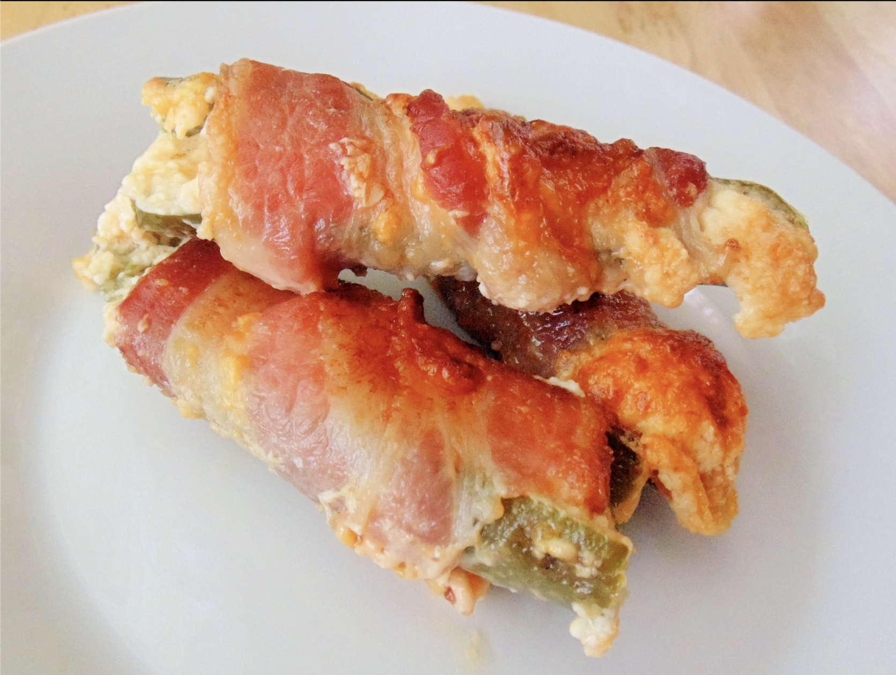

Grilled Jalapeno Poppers

Description
Delicious grilled poppers made in one hour! Extra cheese can be used as cracker spread.
Ingredients
- 8 ounces cream cheese
- 2 tablespoons grated Parmesan cheese
- 1 1/2 teaspoons garlic powder
- 1 1/2 cups shredded Cheddar Cheese
- 16 whole jalapeno peppers with stems
- 8 slices bacon, cut in half crosswise
Steps
- Preheat an outdoor grill for medium heat, and lightly oil the grate.
- Lay a jalapeno pepper onto a work surface, and cut a lengthwise sliver from the side of the pepper, exposing the seeds and white membrane. With the handle of a teaspoon, scrape out the seeds and membrane, leaving the hollow pepper. Repeat for the rest of the peppers. Chop up the pepper slices, and mix into the cheese stuffing. Stuff each pepper with cheese mixture, and wrap each stuffed pepper in a half bacon slice. Secure with toothpicks.
- Grill the poppers on a less-hot part of the grill until the peppers are hot and juicy and the bacon is browned, 30 to 40 minutes.
Nutrition Facts
Per Serving: 164 calories; protein 5.8g; carbohydrates 1.6g; fat 15g; cholesterol 36.8mg; sodium 234.1mg.
Back to recipe list